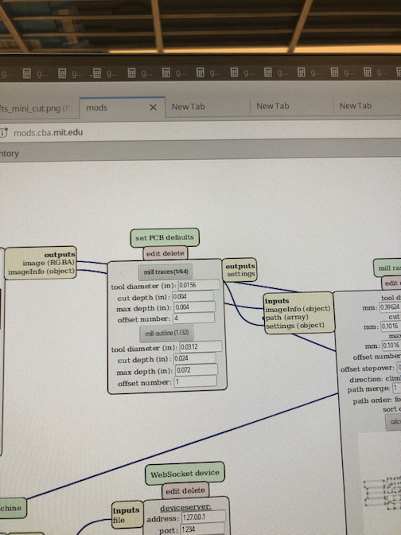
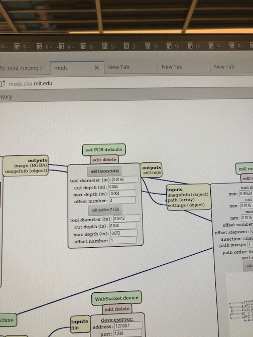
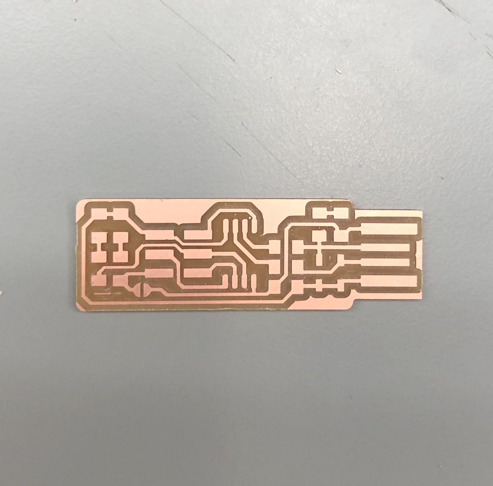
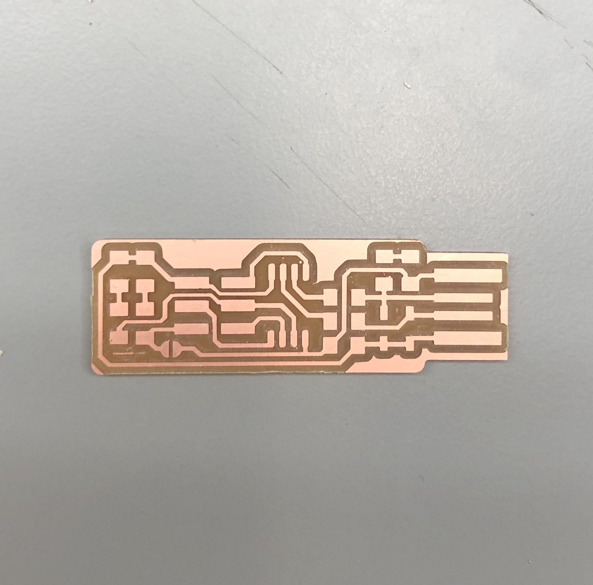
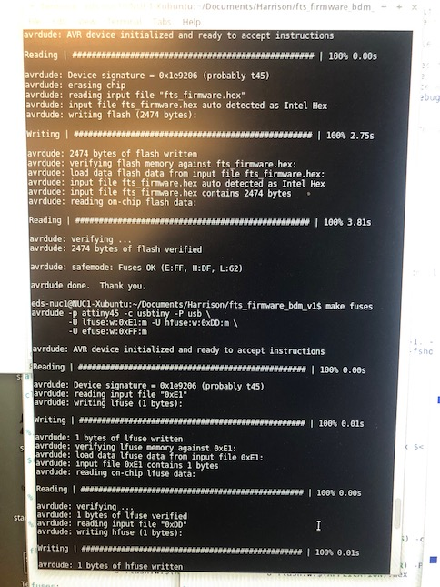
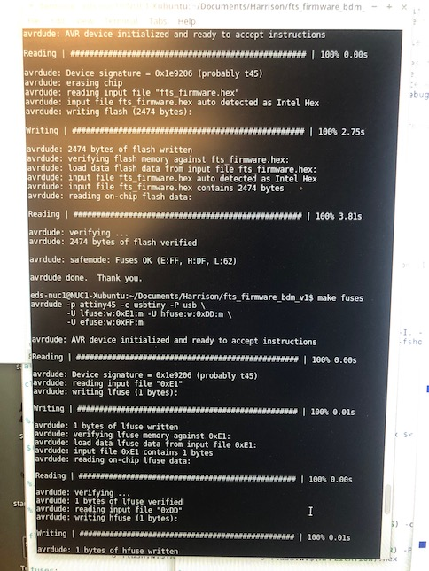

This weeks assignment was to create the FabTinyISP, a programmer/board. The FabTinyStar is yet another version of an AVR ISP programmer/board that can be produced in a fab lab using a milled PCB and readily available components. The project is based on the efforts of many people. AVR microcontrollers can utilize an interface called In-System-Programming. ISP allows the chip to be programmed or reprogrammed while in an actual circuit via a pin header.

I download the PNG files for the traces and the board outline and uploaded them to the CBA module for the Roland CNC machine, one at a time. For the outline of the board, I used the 1/34 inch drill bit and for the traces, I used the smaller 1/64th in. drill bit and switched them between jobs.


I had to make sure the dpi is correct, to make sure the dimensions of the traces are correct. When using eagle files, I always have to remeber to double the dpi to make sure the dimensions are correct. In this case, the dpi should be 1000. I also adjusted the origin to make sure the machine will be cutting the copper and not damage the machine.
 
Before pressing print, I also wanted to review the toolpaths to make sure the machine is going to be cutting everything it needs to cut.
First thing I did was tape a plate of copper to the base of the Roland CNC machine and made sure that I had the correct drillbit in for what I had configured in the CBA module.
Then I wiped my finished board with ethonol to get rid of the thin film over the copper that needs to be gone in order for the electronics to be easily soldered on.
 
The next step is to solder on all of the needed electronics. After that, I also needed to make the USB port better. I did this by adding solder on all of the traces. However, I had a lot of problems with the computer seeing my programmer so I had to make sure that the solder I added was a smooth layer. I also needed even more contact with the USB port so I added a couple layers of tape to the bottom of the programmer to make that connection better.

Needed Electronics:
1x ATtiny45 or ATtiny85
2x 1k resistors
2x 499 resistors
2x 49 resistors
2x 3.3v zener diodes
1x red LED
1x green LED
1x 100 capacitor
1x 2x3 pin header
Progress from board 1 to board 2:

Before moving on to the programming step, I checked my board against the schematic and PCB layout image to make sure I have installed the correct components in the correct locations and orientations. I also made sure that all my parts are flat on the board, not tilted with pins in the air and that the solder connections are smooth. Lastly, I used a multimeter to check for shorts between VCC and GND.
I downloarded the make file from the CBA website. The first step was to update the Makefile for the type of programmer you're going to use to program your board. The Makefile, by default, assumes that you're going to use a programmer in the usbtiny family (e.g. another FabISP board) so therefore I didn't need to change Anything because I programmed by board with another board that someone created.

I connected my friend's programmer to the ISP header on my board. I made sure that this cable is in the correct orientation. Pin 1 is marked in the board diagram with a dot and has the MISO signal connected to it, to help with figuring out the orientation. Then I ran "lsusb" on the terminal to make sure my programmer was even regognized by the computer as pluged in. After I saw it, I ran make flash. This erased the target chip, and program its flash memory with the contents of the .hex file you built before. I saw several progress bars while the programmer erased, programed, and verified the chip.

Then I ran the make fuses command. This set up all of the fuses except the one that disables the reset pin. Again, I saw several progress bars from the programmer. Lastly, I ran make rstdisbl. This did the same thing as the make fuses command, but this time it's going to include that reset disable bit as well. Finally, I disconnected VCC from the Vprog pin on the ISP header by removing the bridge on the solder jumper. I tested my board by programming another board with it and I have been using my programmer to program all of my boards including my final project.
 
